Principal Investigator |
|
 |
 |
Mike did his his undergrad at Stanford in Symbolic Systems and his PhD work at MIT. He is broadly interested in the relationship between language and cognition, especially as it relates to children's early language development. |
| |
Postdocs |
 |  |
Gabe did his graduate work in linguistics at UC San Diego, and his undergraduate work in math at Princeton. He focuses on computational models of language acquisition, especially for word segmentation and constraint-based phonology, as well as using social media to investigate pragmatics and dialect geography. |
|
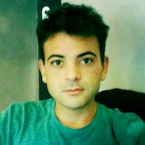 |
|
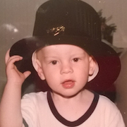 | 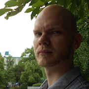 |
Okko Räsänen
Visiting Postdoc
Okko did his D.Sc. (Tech.) in Language Technology at Aalto University, Finland, in 2013. He is interested in how humans and machines can learn meaningful representations from sensory input in an unsupervised manner, especially how human infants acquire their native language by simply interacting with their environment. |
 |
 |
Dan did his graduate work at Indiana University and his undergrad at Carnegie Mellon. Having spent some time thinking about infant language learners as physical symbol systems and as attentionally-driven associationists, he's now trying to model them as social inference machines. |
| |
Graduate Students |
| 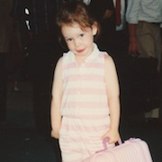 |
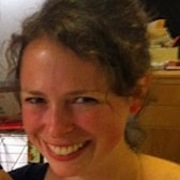 |
Ali Horowitz
5th year PhD StudentAli completed a B.S. in Brain and Cognitive Sciences at the University of Rochester in 2008 and spent two
years as a lab manager at MIT before beginning her graduate studies. She is interested in how children use language
to make inferences about a speaker's knowledge. |
 |
 |
Molly Lewis (personal page)
4th year PhD StudentMolly completed a B.A. in Linguistics at Reed College in 2009 and then spent two years as a lab manager in Duane Watson's lab at the University of Illinois at Urbana-Champaign. Her research explores the relationship between the form of a word and its meaning at two different timescales: language acquisition and language evolution. |
 |
 |
Kyle MacDonald (personal page)
2nd year PhD StudentKyle graduated from Wesleyan University with a B.A. in Psychology in 2010. He is intersted in understanding the importance of social information for language learning. Currently, he is exploring how joint attention supports learning across different contexts and language modalities (spoken vs. signed languages). |
 |
 |
Ann Nordmeyer
4th year PhD StudentAnn completed a B.A. in Psychology at Smith College, where she worked for three years in the de Villiers
lab studying language acquisition and language and thought. She is currently interested in examining pragmatic, semantic, and conceptual issues in the
development of negation. Even though she spends her time thinking about negative utterances, she is actually a very positive person! |
 |
 |
Erica Yoon
2nd year PhD StudentErica completed a B.A.Sc. in Cognitive Science at McGill University. She worked in the Onishi lab, studying how infants use cues for speech segmentation, and also how adults interpret sentences with ambiguous meanings. She is interested in looking at how children use linguistic and contextual cues to make inferences about speakers' intentions. |
| |
Undergraduates |
| 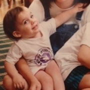 | 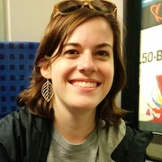 |
Sarah Lucy Case
Human Biology StudentSarah is a Human Biology major with a concentration in Communication and Culture. Over the past year, she has worked with Dan Yurovsky studying how children's memory constraints impact word learning. For her honors thesis, she is looking at how preschoolers respond to phonetic noise and unreasonable utterances.
|
| 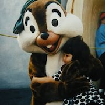 | |
Rachel Chung
Science, Technology, and Society StudentRachel is currently an undergraduate student majoring in Science, Technology, and Society with a design focus. During her first two years at Stanford, Rachel was on the pre-med track studying Human Biology, but realized that she wanted to transition to a more artistic field. In transition between majors, Rachel became interested in how children behave and explore in a museum. With the Children's Discovery Museum of San Jose, she has done head-camera studies and design research, and is currently working on her honors thesis. |
| 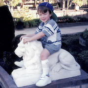 |
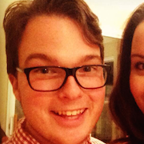 |
Nicholas Moores
Senior in LinguisticsNick is a Linguistics major and Psych coterm interested in how children use both low-level acoustic information and high-level pragmatic reasoning during language learning. He is working with Ann Nordmeyer on a project investigating children's comprehension and production of negation, and is working with Michael Frank and Meghan Sumner on his masters thesis project analyzing children's construction and use of social categories to map speakers' intent.
|
| |
Research Staff |
 |

| Mika Braginsky
Research AssistantMika graduated from MIT in 2014 with a B.S. in computer science and in cognitive science. She's broadly interested in modeling language acquisition, and is specifically working on Bayesian models of noun and verb learning.
|
| 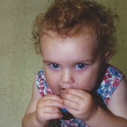 |
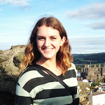
|
Sarah James
Research AssistantSarah attends Santa Clara University with a main focus in Psychology along with an Art History minor. She is currently interested in children's development and acquisition of language, specifically focusing on the ways in which children learn how to play with language and the social and developmental implications behind that.
|
 |

|
Rose Schneider
Lab Manager
Rose hails from Johns Hopkins University, where she graduated with a B.A. in Psychological & Brain Sciences and Classics. She is interested in language and number acquisition, and particularly in how the two cognitive systems are related. When she's not busy managing the lab, you can probably find her cycling. |
| 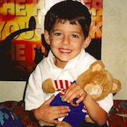 |
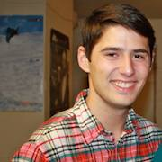
|
Andrew Weaver
Research AssistantAndrew is majoring in Psychology and minoring in Classical Studies at Santa Clara University. He is interested in how children develop language, especially more abstract and poetic uses of language. In addition to running participants for Stanford at the Children’s Discovery Museum, Andrew is currently conducting both a study on the use of assistive features in children’s eBooks, and a study on the develop of playful language elements in pre-schoolers, for SCU. |
| |
Collaborators |
| 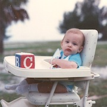 |
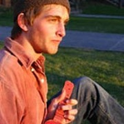 |
Stephan Meylan
PhD Student (UC Berkeley Psychology)
Stephan graduated with a B.A. in linguistics from Brown in 2010 and then worked as a research assistant in the Language and Cognition lab for two years. He is now at UC Berkeley studying how aspects of natural language structure facilitate domain-general learning, and is co-advised by Mike Frank and Tom Griffiths. |

 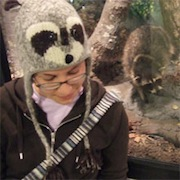
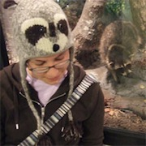